Mercure
MARINER 10
Début de Mission: 03 novembre 1973
Fusée: Atlas Centaur
{kind=link}
Localité: Cap Canaveral, USA
Fin de Mission: 24 Mars 1975
Status: Desactivé
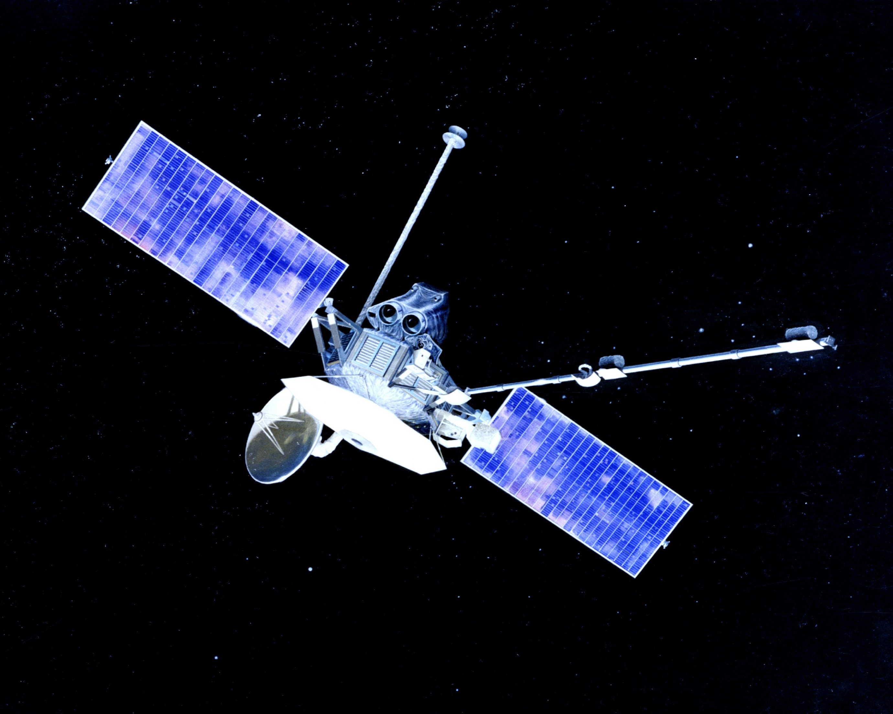
Sa principale découverte c'était l'existance d'un champ magnétique autour de Mercure, ce qui était pas attendu vu sa proximité du soleil. Aussi la cartographisation de 45% de la surface du planète.
La mission a touché sa fin en 1975, et se trouve toujours en orbite autour du soleil, aux alentours de Mercure.
MESSENGER
Début de mission: 3 aout 2004
Fusée: Delta II
{kind=link}
Localité: Cap Canaveral, USA
Fin de Mission: 30 avril 2015
Status: Détruite, délibérément percuté Mercure
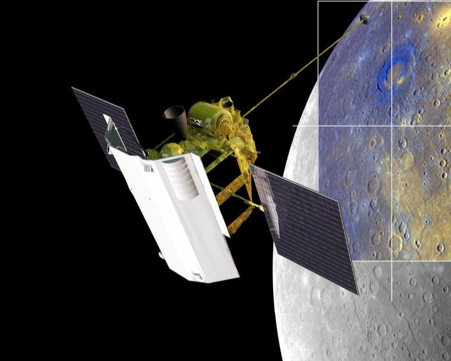
MESSENGER a permis de mieux comprendre la composition chimique de la surface, la structure interne et le champ magnétique de la planète. Elle a notamment révélé la présence de glace d’eau dans des cratères situés aux pôles, malgré les températures extrêmement élevées à la surface.
La mission est finie en 2015 lorsque la sonde, à court de carburant, a délibérement été écrasé sur Mercure.
BEPI-COLOMBO
Début de Mission: 19 octobre 2018
Fusée: Ariane 5
{kind=link}
Localité: Kourou, Guyane Française
Fin de Mission: ?
Status: Opérationnelle
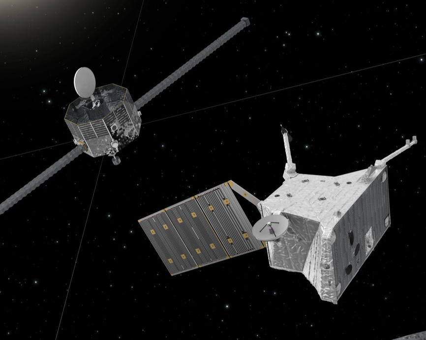
Lancé en 2018, comme tous les sondes qui voyagent à Mercure, elle a effectué plusieurs survols de la Terre, Venus et son planète de destination pour pouvoir ralentir.
Elle est composée de deux sondes: L'orbiteur européen MPO (Mercury Planetary Orbiter) a le but d'étudier la surface et l'intérieur de la planète. L'orbiteur japonais MMO (Mercury Magnetospheric Orbiter) a le but d'étudier son champ magnétique.
Le but général est de mieux comprendre sa formation, composition, structure et évolution, et approfondir les découvertes de la sonde américaine MESSENGER.
Venus
MARINER 2
Début de Mission: 27 aout 1962
Fusée: Atlas-Centaur
{kind=link}
Localité: Cap Canaveral, USA
Fin de Mission: 3 Janvier 1963
Status: Desactivé
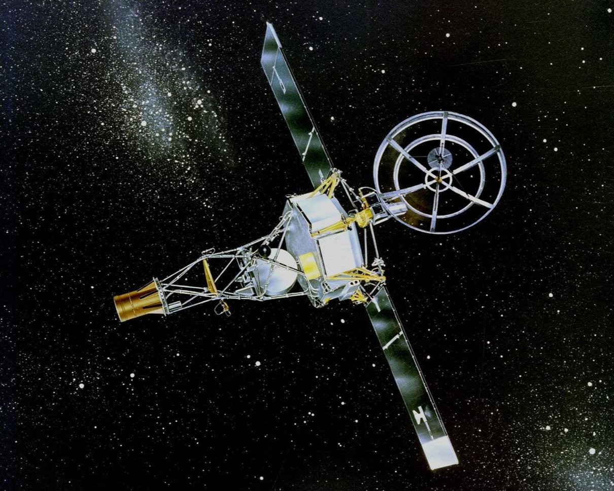
En décembre 1962, la sonde est passé à environ 35 000km de Venus et a transmis des données importantes sur sa temperature et atmosphère. Elle a confirmé que la planète possède une surface extremement chaude, plus que ce qu'on imaginait et a aussi fourni des informations importantes sur le vent solaire.
La sonde a envoyé sa dernière transmission en Janvier 1963 et doit se trouver actuellement en orbite du soleil.
VENERA 13
Début de mission: 30 Octobre 1981
Fusée: Proton-K
{kind=link}
Localité: Cosmodrome de Baikonour, Kazakhstan
Fin de Mission: 1 Mars 1962
Status: Détruite / Desactivé
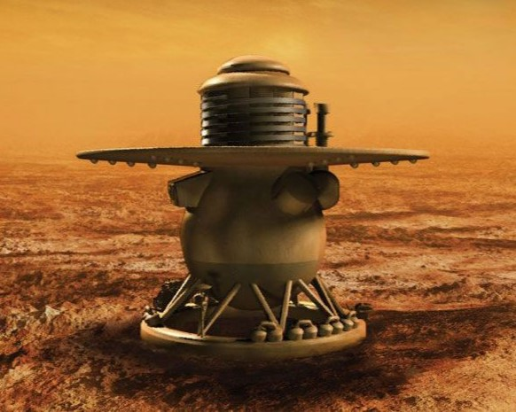
Après que sa "soeur", Venera 7, a revelé que la surface de Venus rassamblait plus à l'enfer plutot qu'à la Terre, avec sa temperature de 460 dégrés et une pression atmosphèrique écrasante de 90x celle de notre planète, Venera 13 a montré le paysage rocheux sous un ciel orangé.
Conçue pour durer une dizaine de minutes, la sonde à pu transmettre des données pendant 2 heures avant de ne plus pouvoir résister dans les conditions de la surface vénusienne.
MAGELLAN
Début de Mission: 4 Mai 1989
Fusée: Space Shuttle Atlantis
{kind=link}
Localité: Centre Spatial Kennedy, USA
Fin de Mission: 13 Octobre 1994
Status: Détruite, délibérément percuté Venus
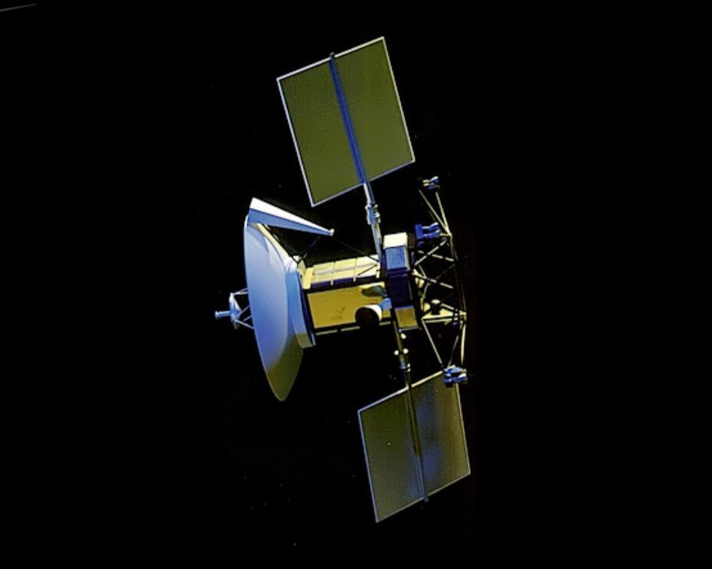
La sonde a réussi a cartographier 98% de la surface vénusienne avec une précision impressionante. Elle a revélé un monde dominé par d'immenses plaques volcaniques, montagnes et volcans, montrant que Venus est/était géographiquement active.
La mission est arrivée à sa fin en 1994, quand la sonde a été déliberement jétée sur Venus, fournissant encore de données pendant sa décente avant de bruler dans l'atmosphere.
AKATSUKI
Début de Mission: 21 mai 2010
Fusée: H-IIA
{kind=link}
Localité: Centre Spatial Tanegashima, Japan
Fin de Mission: 18 septembre 2025
Status: Desactivé / Inconnu
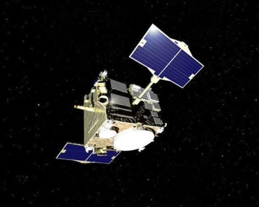
Après plusieurs années passées en orbite autour du Soleil, ils ont réussi une seconde tentative en 2015 en utilisant les petits moteurs de la sonde pour ralentir suffisamment. Cette fois, Akatsuki est parvenue à se placer en orbite autour de Vénus.
Depuis cette orbite, la sonde a étudié les nuages très épais, les vents extrêmement rapides et les tempêtes de la planète afin de mieux comprendre le fonctionnement de son atmosphère et l’évolution de son climat. Avec le temps, certains instruments se sont progressivement dégradés et la sonde a fini par manquer de carburant pour maintenir ses manœuvres orbitales. La mission s’est finalement terminée dans les années 2020, après plus de dix ans dans l’espace.
Mars
MARINER 4
Début de Mission: 28 Novembre 1964
Fusée: Atlas LV-3
{kind=link}
Localité: Cap Canaveral, USA
Fin de Mission: 21 Decembre 1967
Status: Desactivé
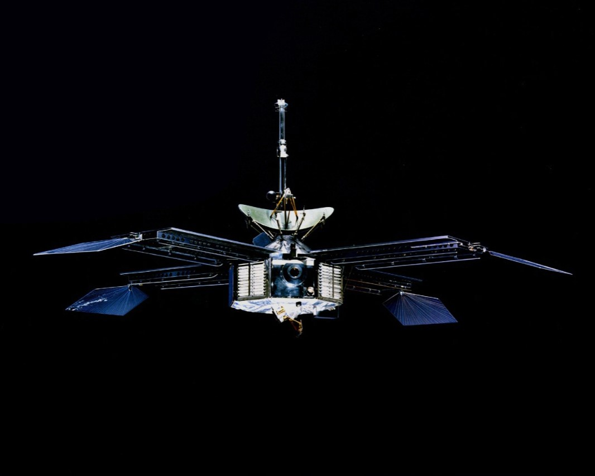
Après environ huit mois de voyage dans l’espace, la sonde est passée près de Mars en juillet 1965. Pendant ce survol, Mariner 4 a pris les toutes premières images rapprochées de la planète et les a transmises vers la Terre. Ces photos ont montré une surface très cratérisée, ressemblant davantage à la Lune qu’à une planète possédant des océans ou de la végétation, ce qui a profondément changé la vision que les scientifiques avaient de Mars.
Après son passage près de la planète, la sonde a continué à voyager dans l’espace en orbite autour du Soleil tout en transmettant des données pendant plusieurs années. La mission a finalement pris fin en 1967 lorsque le contact radio avec la sonde a été perdu, probablement à cause de l’épuisement de son énergie.
VIKING
Début de Mission: 20 Aout 1975 (Viking 1) | 9 Septembre 1975 (Viking 2)
Fusée: Titan IIIE
{kind=link}
Localité: Cap Canaveral, USA
Fin de Mission: 11 Novembre 1982 (Viking 1) | 12 Avril 1980 (Viking 2)
Status: Desactivés
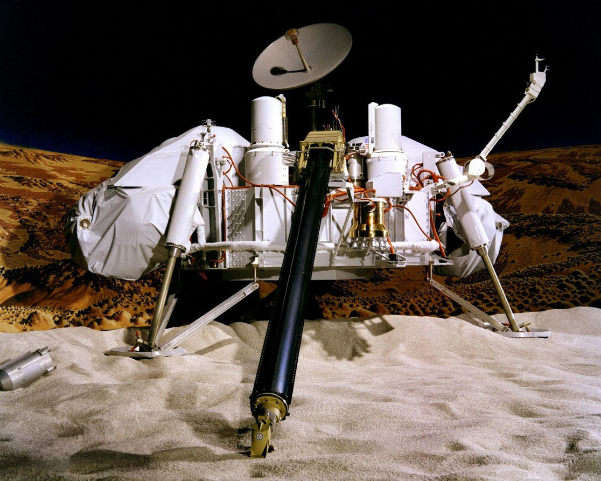
Viking 1 s’est posé sur Mars en juillet 1976, suivi par Viking 2 en septembre de la même année. Les deux atterrisseurs ont pris de nombreuses images de la surface martienne, analysé le sol et l’atmosphère, et réalisé des expériences biologiques pour tenter de détecter une activité microbienne.
Les résultats n’ont pas permis de confirmer l’existence de vie, mais les missions ont énormément amélioré les connaissances sur l’environnement martien. Viking 1 Lander a fonctionné jusqu’en 1982 avant que le contact soit perdu, tandis que Viking 2 Lander a cessé de transmettre des données en 1980 après plusieurs années d’activité à la surface de Mars.
SPIRIT ET OPPORTUNITY
Début de Mission: 10 Juin 2003 (Spirit) | 8 Juillet 2003 (Opportunity)
Fusée: Delta II
{kind=link}
Localité: Cap Canaveral, USA
Fin de Mission: 22 Mars 2010 (Spirit) | 10 Juin 2018 (Opportunity)
Status: Desactivé
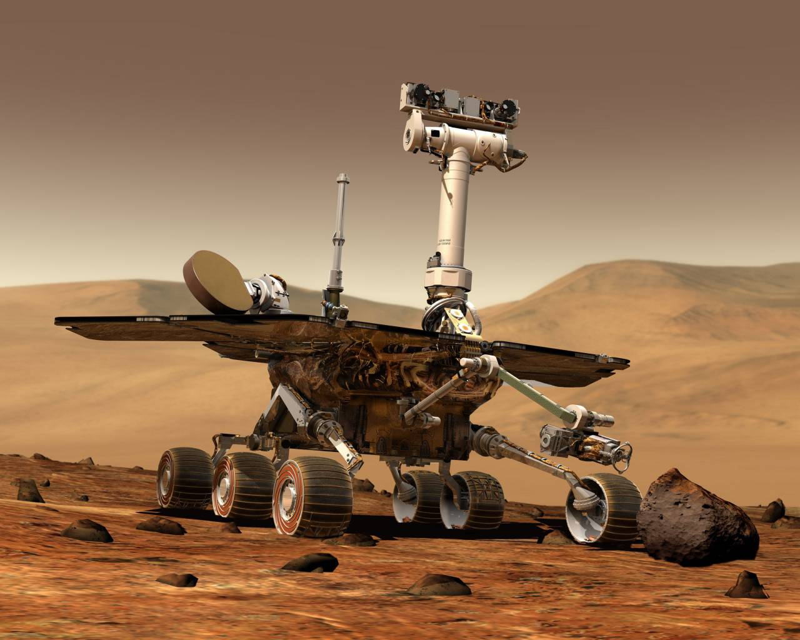
Spirit a atterri en janvier 2004 dans la région de Gusev Crater, tandis que Opportunity a touché le sol martien quelques semaines plus tard dans Meridiani Planum. Les deux rovers ont envoyé des milliers d’images et analysé des roches et des sols, révélant des indices d’anciens environnements aqueux sur la planète rouge.
Spirit a continué à explorer pendant plus de six ans avant que ses derniers signaux ne soient reçus en 2010 à cause d’un enlisement dans le sol et de la fin de ses ressources énergétiques. Opportunity, quant à lui, a survécu bien au-delà de sa mission initiale de 90 jours, explorant la surface martienne pendant près de 15 ans avant que les tempêtes de poussière de 2018 ne mettent fin à ses communications. Ces deux rovers ont profondément enrichi notre compréhension de Mars et de son potentiel passé pour abriter la vie.
CURIOSITY
Début de Mission: 26 Novembre 2011
Fusée: Atlas V
{kind=link}
Localité: Cap Canaveral, USA
Fin de Mission: ?
Status: Opérationelle
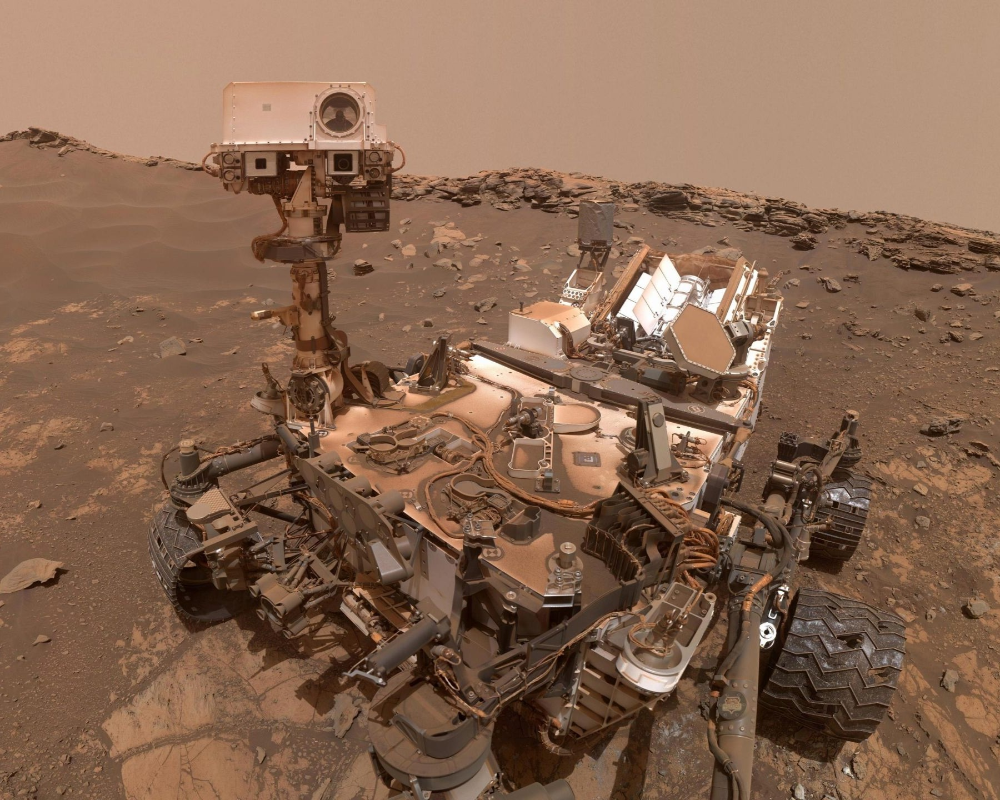
Curiosity a parcouru de nombreux kilomètres à travers le cratère, analysant des roches, des sols et l’atmosphère grâce à ses instruments scientifiques très sophistiqués. Il a notamment découvert des traces de rivières anciennes, des minéraux formés en présence d’eau et des composés organiques, révélant un passé martien beaucoup plus favorable à la vie que ce que l’on pensait auparavant.
La mission, qui devait initialement durer deux ans, continue encore aujourd’hui, plus d’une décennie après l’atterrissage, grâce à la robustesse du rover et à la gestion minutieuse de ses ressources. Curiosity a profondément transformé notre compréhension de Mars et reste un symbole emblématique de l’exploration robotique de la planète rouge.
INSIGHT
Début de Mission: 5 Mai 2018
Fusée: Atlas V
{kind=link}
Localité: Base de Vandenberg, USA
Fin de Mission: 15 Decembre 2022
Status: Desactivé
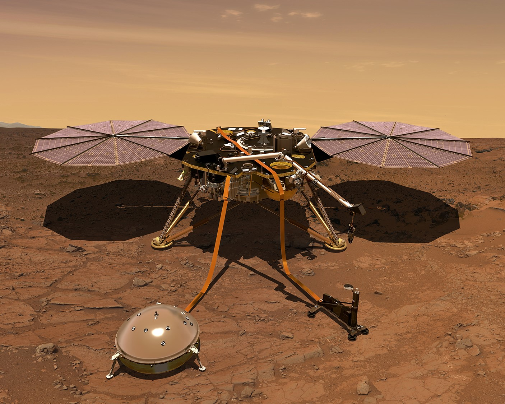
L’atterrisseur a déployé un sismomètre et une sonde thermique capable de s’enfoncer dans le sol pour analyser la structure interne de Mars, fournissant des données inédites sur son noyau, son manteau et sa croûte. Il a également observé des tremblements de Mars, appelés « marsquakes », offrant un aperçu unique de la dynamique interne de la planète.
La mission, initialement prévue pour deux ans, a été prolongée grâce à la fiabilité de l’atterrisseur et a continué à transmettre des données jusqu’en 2023, date à laquelle la mission scientifique a été déclarée terminée. InSight a ainsi permis de mieux comprendre la formation et l’évolution de Mars et de nombreuses planètes telluriques.
PERSEVERANCE
Début de Mission: 30 Juillet 2020
Fusée: Atlas V
{kind=link}
Localité: Cap Canaveral, USA
Fin de Mission: ?
Status: Opérationelle
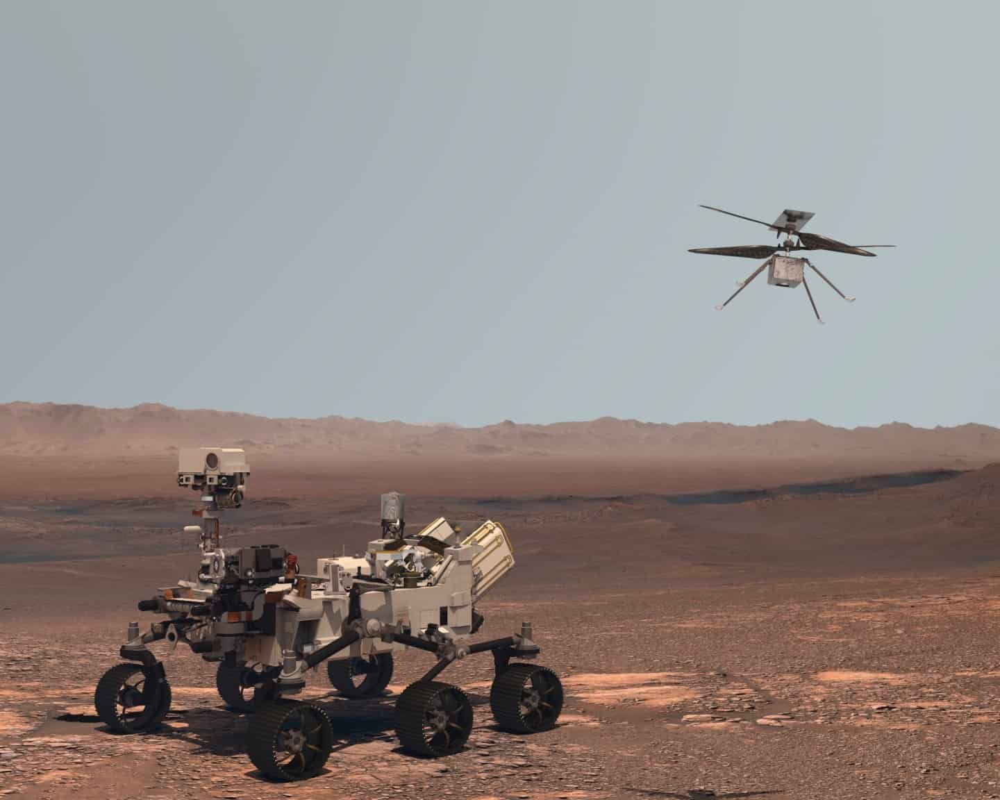
Perseverance a été accompagné d’un petit hélicoptère expérimental, Ingenuity, dont l’objectif était de tester la possibilité de vols motorisés dans l’atmosphère mince de Mars. Ingenuity a réussi son premier vol en avril 2021 et a continué à effectuer de multiples missions de reconnaissance, offrant des perspectives aériennes inédites pour guider les déplacements de Perseverance.
La mission, toujours en cours, a déjà permis de découvrir des signes d’anciens environnements aqueux, de collecter plusieurs échantillons de roche pour un futur retour sur Terre et de démontrer qu’un vol contrôlé est possible sur Mars, ouvrant de nouvelles voies pour l’exploration planétaire.
Lune
LUNA 9
Début de Mission: 31 Janvier 1966
Fusée: Molniya-M
Localité: Cosmodrome de Baikonour, Kazakhstan
Fin de Mission: 6 Février 1966
Status: Désactivé
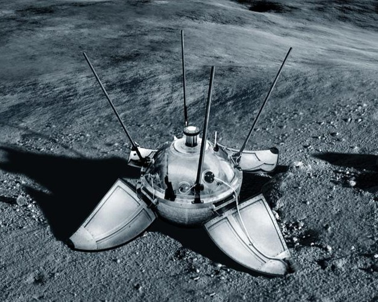
Après son atterrissage dans la région des Cratères Oceanus Procellarum, la sonde a déployé ses instruments scientifiques et envoyé vers la Terre les premières images panoramiques de la surface lunaire. Ces photos ont confirmé que la surface de la Lune pouvait supporter un atterrissage en douceur, ouvrant la voie aux missions lunaires habitées.
La mission s’est officiellement terminée quelques jours après l’atterrissage, lorsque Luna 9 a cessé de transmettre des données, mais ses observations ont profondément influencé la planification des futurs programmes lunaires soviétiques et américains.
ZOND 5
Début de Mission: 14 Septembre 1968
Fusée: Proton-K
{kind=link}
Localité: Cosmodrome de Baikonour, Kazakhstan
Fin de Mission: 21 Septembre 1968
Status: Conclue / Capsule Recupéré
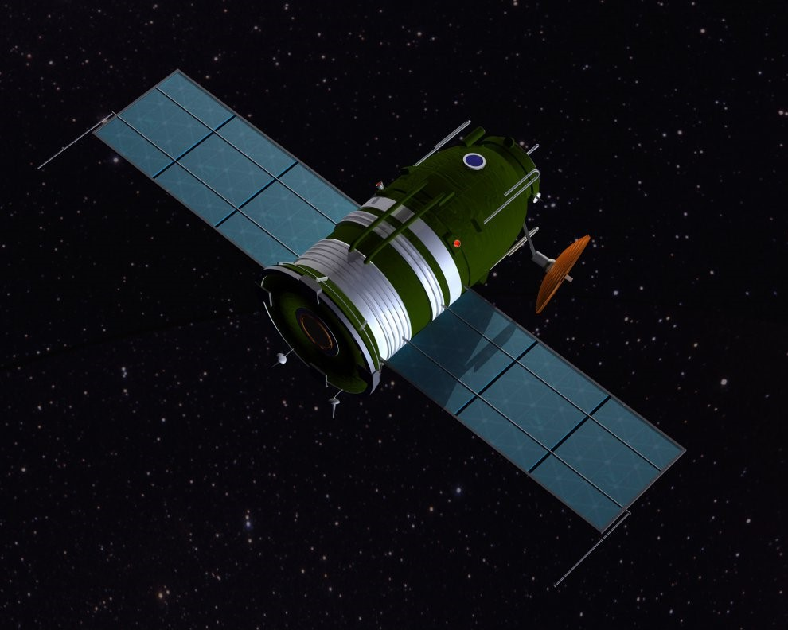
Zond 5 a accompli un survol de la Lune, emportant à son bord des tortues, des insectes, des graines et d’autres organismes vivants afin d’étudier les effets des radiations et de l’apesanteur sur la vie. La sonde a ensuite effectué un retour contrôlé vers la Terre, atterrissant dans l’océan Indien, devenant le premier vaisseau spatial à envoyer des êtres vivants autour de la Lune et à les ramener vivants sur Terre.
La mission s’est achevée avec succès après l’atterrissage, fournissant des données précieuses sur la navigation lunaire et la survie des organismes vivants dans l’espace.
LUNAR RECONAISSANCE ORBITER
Début de Mission: 18 Juin 2009
Fusée: Atlas V
{kind=link}
Localité: Cap Canaveral, USA
Fin de Mission: ?
Status: Opérationelle
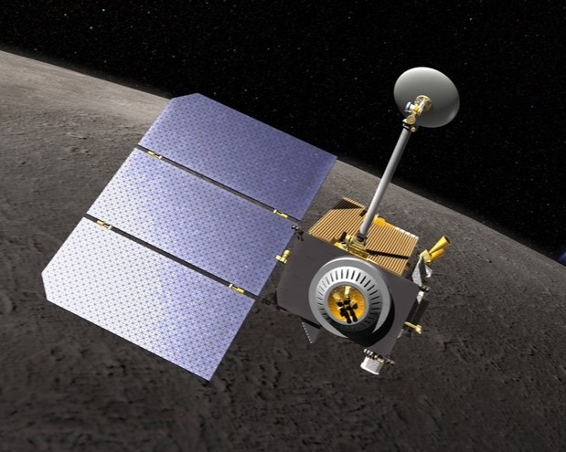
LRO est équipé de plusieurs instruments sophistiqués, comme des caméras haute résolution et des détecteurs de rayonnement, qui ont permis de découvrir de nouveaux cratères, de mesurer la lumière solaire disponible et d’identifier des zones potentiellement riches en glace d’eau près des pôles lunaires.
La mission, initialement prévue pour un an, continue encore aujourd’hui, fournissant des images et des données cruciales pour l’exploration lunaire. Elle a transformé notre vision de la Lune, offrant aux scientifiques et aux ingénieurs des informations précises pour planifier les futurs alunissages habités et robotisés.
CHANDRAYAAN-3
Début de Mission: 14 Juillet 2023
Fusée: Launch Vehicle Mark-3
{kind=link}
Localité: Centre Spatial Satish Dawn, Inde
Fin de Mission: 28 Septembre 2023
Status: Désactivés
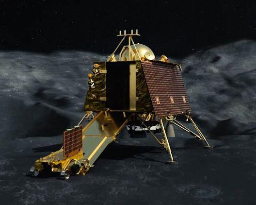
Chandrayaan-3 était composée d’un module de descente et d’un rover nommé Pragyan, conçu pour analyser le sol et étudier la composition chimique de la région d’alunissage. En août 2023, le module s’est posé avec succès, faisant de l’Inde le quatrième pays à réussir un atterrissage en douceur sur la Lune.
La mission a permis de collecter des données sur la topographie, la minéralogie et la présence d’éléments comme le sodium et le potassium dans le sol lunaire. Les opérations scientifiques se sont poursuivies pendant plusieurs semaines, laissant un héritage scientifique et technologique important pour les futures missions lunaires indiennes.
CHANG'E 4
Début de Mission: 7 Décembre 2018
Fusée: Long March 3B
Localité: Centre de lancement Xichang
Fin de Mission: ?
Status: Opérationelle(?)
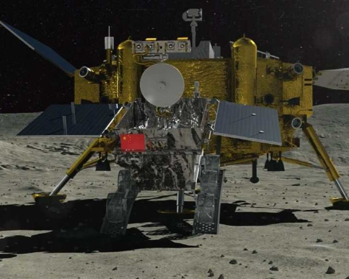
Chang’e 4 est composée d’un module de descente et du rover Yutu-2, chargé d’étudier la géologie, la composition du sol et les caractéristiques des cratères. Le rover a parcouru plusieurs centaines de mètres, envoyant des images et des données sur la structure de la surface lunaire et détectant des matériaux inattendus, offrant de nouveaux indices sur l’histoire de la Lune.
La mission probablement continue encore aujourd’hui, et même si certaines expériences ont une durée limitée, Chang’e 4 a permis de réaliser une percée historique dans l’exploration lunaire, ouvrant la voie à de futures missions sur la face cachée et approfondissant notre compréhension de l’évolution de notre satellite.